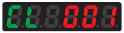

An ion sensor installed on the bottom of the Ionizer detects the charge and ion balance.
The applied voltage is flexibly controlled according to the ion balance conditions to raise ionization efficiency.
Building Automation
Industrial Automation
Power Automation & Safety


Bangladesh Distributor
ZJ-BAS
Ionizer (Digital Bar Type)

The highest level of ionization in its class.
about this Product Family
Related Contents
- Power Supplies / In Addition
- Static Electricity Components
- Features
- Lineup
- Specifications
- Dimensions
- Catalog
last update: August 03, 2015
Three Technologies Supporting Effective and Efficient Ionization
Ion Sensing and Variable-AC System [Industry First]
Micro Power Spraying (MPS) Structure
High-speed airflow is achieved by minimizing the air nozzle diameter. An optimal cone shape is also employed for the inside of the nozzle to further improve ion dispersion. By using a special ring guard shape to pull passive (external) air into the active air stream, the total airflow is dramatically increased.
Optimized Discharge Electrode Pitch Optimized Discharge Electrode Pitch
Setting the discharge electrodes at a pitch that is 80 mm longer than in our previous models achieves an optimal layout that unifies ionizing performance and reduces ion recombination. This model ionizes over long distances with or without the use of an Air Purge Ionizer.
Improving Ease of Use
The Digital Ion Display Supports Safe, Reliable Settings. [Industry First]
From either the Remote Control or the Ionizer...
The Digital Ion Display guides you when making settings. Settings that are important for ionization performance, such as the frequency and ion balance, can be made and displayed safety and reliably from the Ionizer itself, or by using the Remote Control.
A Variety of Displays
Ion Balance Display
The charged state is displayed using colors.
Set Value Display
The current set value is shown on the right side of the display.
The set value can be numerically confirmed, so the setting can be quantified.
This allows identical settings to be made reliably and in a short time even across multiple Ionizers.
Cleaning Display
Notifies when cleaning is required.

Setting Lock
Disables all operations.
Operation Stop Mode Makes Maintenance Easy
The Operation Stop Mode allows for safe cleaning and replacement work. The digital display and LED lamps tell you that the Ionizer is in Operation Stop Mode so you won't forget to return to Operation Mode when you are finished doing maintenance. Both regular operations and maintenance can be done safety and reliably.
Operations from external equipment, such as stopping ionization and performing status management, can be done easily by connecting the Ionizer to a PLC using an I/O cable.
Low Running Cost
M.P.S. Construction Prolongs the Required Maintenance Period by 5 Times Compared to Our Previous Model
Greatly Reduces Maintenance Requirements
The M.P.S. nozzle emits clean air from around the discharge electrode, thus decreasing the amount of foreign matter adhesion, and dramatically extending the time before cleaning is required.
Energy-saving is a Basic Concept for OMRON Ionizers
Generally, bar-type Ionizers use compressed air. Therefore, a large amount of compressed air is needed, especially for long-distance or high-speed ionization. This increases the load rate of the compressor, and consumes large amounts of electricity. The ZJ-BAS uses an optimized discharge electrode pitch and M.P.S. nozzle to improve ionization performance while using an energy-saving structure (low-current consumption) that is environmentally friendly.
80-mm Discharge Electrode Pitch Dramatically Reduces Replacement Costs
The 80 mm discharge electrode pitch and variable-AC system reduce the number of discharge electrodes required by 60%. In addition to reducing the cleaning time, the periodic replacement of the electrodes has also been reduced, thereby dramatically reducing the running cost of the Ionizer.
last update: August 03, 2015